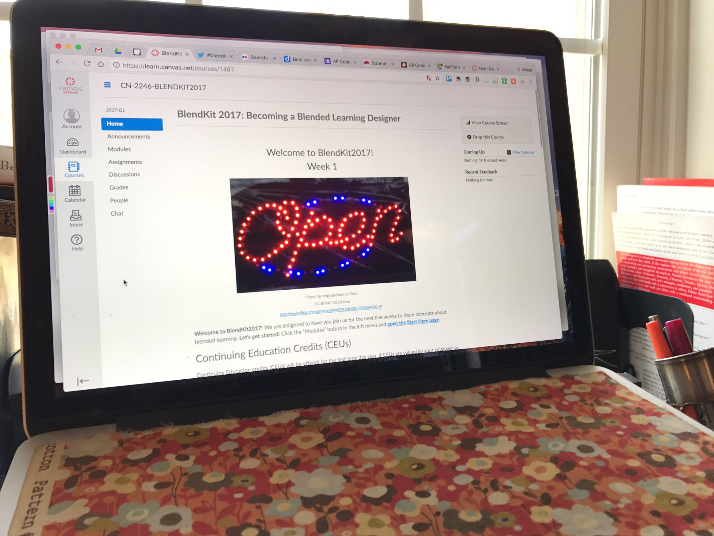

- Just rec'd my course completion badge for #BlendKit2017 🙌 woohoo! I'm excited to start revising/creating some new resources for faculty!
- well #BlendKit2017 is officially over, & the post-course portfolio period is starting but ur welcome to join & audit http://bit.ly/go_blendkit2017
- Wk 5 - #blendedlearning how to? st as allies, formative feedbk along the way, peer review, reflection, benchmarks, try again! #BlendKit2017
- Week 5 - quality #blendedlearning: rigorous assessment, responsiveness to ind, st engagement, high-quality staff development #BlendKit2017
- "Most importantly, do try again." --#Blendkit2017 (Great tip for blended teaching AND life in general.)
- https://goo.gl/images/5CcDW0 Feeling like Goldilocks designing blended courses: "too much work for students... not enough..." #blendkit2017
- #blendkit2017 has been awesome!@Blendkit has done a fantastic job https://twitter.com/techliteracyed/status/851470117024280577 …
- How can iterative design help design better blended learning environments? https://ed.ted.com/on/rNWJUXuQ http://bit.ly/2oi1kSm #BlendKit2017
- #BlendKit2017 tools to help you blend pic.twitter.com/mawCcnaliE
- whether u've been engaging in #BlendKit2017 or not, u still have this weekend to collect 1 badge from each topic to earn course completion!
- #BlendKit2017 By judging online course quality strictly by the designed environment, we completely neglect the evaluation of teaching.
- #BlendKit2017 BlendKit2017: Course Completion : I am so happy to receive credit from University of Central Florida https://t.cred.ly/a4kRuFE8mGHSn1z+dByXcg==$$$ojacd4xUR3w617g12jU4X39cKnr0GhNSMbfbJdDOySbjIrgerQbbNJzNSl/rWnzwAv0QXxlOAzNhM9BpBP/Ug+suCMsNfq0QGKuUxCcR67o=?r=http%3A%2F%2Fcred.ly%2Fc%2F13831243&t=1491486668&c=tw …
- Timeline of all the #BlendKit2017 tweets https://goo.gl/wkimqY
- 5 Blended Learning Trends That Define Higher Education - eLearning Industry #BlendKit2017 https://elearningindustry.com/5-blended-learning-trends-that-define-higher-education …
- feedback gives a clear understanding of student’s needs #blendkit2017
- Use this rubric for self-evaluating a course space in an LMS #kc #blendkit2017 https://ltlatnd.wordpress.com/2017/04/03/self-asess-your-sakai-course … via @ltlatnd pic.twitter.com/pdnqhmNu0T
- Use this rubric for self-evaluating a course space in an LMS #kc #blendkit2017 https://ltlatnd.wordpress.com/2017/04/03/self-asess-your-sakai-course … pic.twitter.com/WyZkS2PkSu
- I’ve learned so much these last five weeks in #BlendKit2017 - looking forward to digging deeper into the topics for the fall semester!
- Never stop learning! #blendinglearning is continually improving to meet the needs of Ss & Ts to deliver quality instruction #BlendKit2017 pic.twitter.com/MtETlXwtpZ
- #blendkit2017 Challenge from Wk 04 reading:how to integrate F2F with online work so students don't become critical of blended instructions
- #blendkit2017 Week 05 reading: High quality faculty development is the cornerstone of effective blended programs.
- #blendkit2017 Chap 5: "Online teaching is often held to higher standards than classroom teaching." Why so?
- #blendkit2017 Chap 5: Limiting the scope of blended course quality to considerations of the designed environment results in a blind spot.
- BlendKit Course: BlendKit Reader: Chapter 5 http://bit.ly/2oy283t #BlendKit2017 pic.twitter.com/UkUuJImJA8
- Quality Assurance-A continuous process for the Blended Learning course #blendkit2017 pic.twitter.com/Rdkw8Wue06
- This course is really stirred up my creative side. Earth science as a blended course will be fun!!! #blendKit2017.
- Blendkit Reader Blog Summary http://mbartley.edublogs.org/2017/04/02/chapter-5-blendkit-reader/ … #BlendKit2017
- The 3-2-1 on my @CanvasLMS #BlendKit2017 Chapter 5 summary. Wilson; my Neighbor. pic.twitter.com/MGpJKZqjeF
- Q:With which of your trusted colleagues might you discuss effective teaching of blended learning courses?Say no more.#WeAre203 #Blendkit2017
- A uniform approach helps reinforce learning #blendkit2017
- A few thoughts on Week 5 readings in #BlendKit2017 at http://co-laborar.blogspot.com/2017/04/blendkit2017-week-5-reading-reaction.html …
- Focusing solely on design and not "actual interactions" = "significant blind spot" in evaluating quality of blended learning #BlendKit2017
- I remind myself over and over that I cannot know if students like or don't like my class by the looks on their faces #blendkit2017
- Limiting the scope of blended or online QA to considerations of the designed environment results in a significant blind spot. #blendkit2017
- Quality assurance rubrics offer useful checklists to meet minimum standards, but might exclude excellence/innovation #blendkit2017
- Work in Progress http://possibilitiesabound.blogspot.com/2017/03/work-in-progress-2.html … #blendkit2017 As always learning and continuing to think out loud in this post
- From #blendkit2017 chap 5 reading-- how can this stance lead to improved learning? so many possibilities-- pic.twitter.com/8Ppabzhiwe
- Open SUNY OSCQR Rubric with resources, examples to assess course design & accessibility https://bbsupport.sln.suny.edu/bbcswebdav/institution/OSCQR/OSCQR-Links-BKP-2016-08-09.html … #BlendKit2017
- And of course UCF’s "Faculty Seminars in Online Teaching" podcast https://cdl.ucf.edu/teach-online/professional-development/faculty-seminars/ … #BlendKit2017
- With warmer weather time for listening to podcasts while walking! Check out Instruction by Design https://conhi.asu.edu/academic-innovation/teaching-learning-and-technology/instruction-design-podcast … #BlendKit2017
- #BlendKit2017 Chapter 5 is my favorite chapter.
- great episode! I enjoyed the listen. thotful dialogue. good ideas! #blendkit2017 #eme5050 https://twitter.com/tbcavanagh/status/846765095304806401 …
- This perspective in #blendkit2017 Chapter 5 reading really resonates with me! pic.twitter.com/nceuSrw0IQ
- Useful resources from @MERLOTorg #CourseDesign page (advanced search, course design, exact phrase) https://goo.gl/ooxLgm #BlendKit2017
- One of the many quotes that stand out in Quality Assurance in Blended Courses #BlendKit2017 pic.twitter.com/98PiG3y3Ls
- @mpondu Appreciating your take on rubrics and checklislts http://teachlearntechblog.blogspot.com/2017/03/quality-assurance-in-blending-learning.html … #blendkit2017
- .@lanihall Learned much from your blog post — thx. Your favorite quote is great, noting that one. #BlendKit2017
- Blog post on Quality Assurance in Blended Learning: One sentence summary, reaction, & helpful links http://teachlearntechblog.blogspot.com/2017/03/quality-assurance-in-blending-learning.html … #BlendKit2017
- Faculty Focus page tagged by Course Design Ideas http://www.facultyfocus.com/tag/course-design-ideas/ … #CourseDesign #BlendKit2017
- The challenge of implementing a one-size fits all rubric for course design would be daunting #BlendKit2017 #CourseDesign pic.twitter.com/RNziZ1Tpof
- A caveat in using the same standards rubric repeatedly over time #BlendKit2017 #rubrics pic.twitter.com/AvBlN6rYaU
- When instructions explained in class are also in the LMS, students more likely to perceive blended aspects as a seamless whole #blendkit2017
- Nice ideas from @CatMoore for blending online scenarios with face-to-face discussion. Check it out #blendkit2017 https://twitter.com/CatMoore/status/846876058876067841 …
- #Blendkit2017 - Content and quality in Blended learning - We cannot ascertain the quality of blended learning... http://fb.me/2Teut0upm
- THIS caught my attention and has me thinking deeply http://possibilitiesabound.blogspot.com/2017/03/this-caught-my-attention.html … #BlendKit2017
- Something too easy to do: copy, paste, and re-purpose but … #BlendKit2017 pic.twitter.com/gq3czYBMYs
- "Student's online work must be relevant to in-class activities." Ch. 4 reading. #blendkit2017
- Great quote from Chapter: Quality Assurance in Blended Learning #BlendKit2017 #CourseDesign pic.twitter.com/QUabJuqOKZ
- #Blendkit2017 Week 5: Teachers "will need to adopt the attitude of learners, examining our practices and seeking continually to improve."
- Great reading material from Chapter 5 of BlendKit Reader for this week! #BlendKit2017
- #BlendKit2017 Week 05! Share your badges & tell your friends! Have you considered the portfolio review? Still time! #blendkitlocal
- Well designed courses are like a great harmony - multiple pieces coming together to form a beautiful sound in the universe #blendkit2017
- An updated timeline of our #BlendKit2017 tweets https://storify.com/mpondu/blendkit2017 …
- Powerful thoughts & Ideas->This Will Revolutionize Education https://youtu.be/GEmuEWjHr5c #BlendKit2017 #blendedlearning #SCPSblended #scpsDLL
- A one-sentence summary of Chapter 5: Quality Assurance in Blended Learning #BlendKit2017 pic.twitter.com/p0v0e1opMo
- These are great! 5 Ways College Teachers Can Improve Their Instruction http://flip.it/Rln4Ww #Pedagogy #BlendKit2017
- My badges - http://credly.com/u/ehlongs #Blendkit2017-Blended learning is rewarding me for learning new skills to improve teaching strategies.
- #Blendkit2017 - Blended learning is rewarding me for learning new skills to improve learning strategies for both... http://fb.me/1Noe5wMUz
- 30 min. recording: #BlendKit2017 Week04 Webinar on "Blended Content & Assignments" https://www.youtube.com/watch?v=TB1Ix4pZusU …
- Good article on what engagement means http://tinyurl.com/zpq39km aimed at k12 but most applies at higher levels #BlendKit2017
- We need to think critically about the quality of how we teach as much as the quality of what we teach. #BlendKit2017 pic.twitter.com/D02Ybv8IJz
- .@RubyVixen plz bear in mind that "due dates" are very flexible in #BlendKit2017 up until the course closes. :-)
- Ch 5 reflection - check - feedback is key to future progress #feedback #productivemonday #teacherlife #BlendKit2017 @Blendkit
- Barely finished my #BlendKit2017 reading in time for the weekly webinar … hate the feeling of falling behind!
- starting in moments: #BlendKit2017 Session 04 "Blended Content & Assignments" https://www.youtube.com/watch?v=TB1Ix4pZusU … (more crucial than it sounds!)
- 11 ways learners can collaborate online in real time #kc #blendkit2017 https://ltlatnd.wordpress.com/2017/03/27/11-ways-collaborate-realtime … via @ltlatnd pic.twitter.com/sPyjaGNoQS
- 11 ways learners can collaborate online in real time #kc #blendkit2017 https://ltlatnd.wordpress.com/2017/03/27/11-ways-collaborate-realtime … pic.twitter.com/Lukxe99AbB
- Uniform organization helps learners know what to expect, how to submit work. Requires careful planning. #BlendKit2017 pic.twitter.com/nJTpOTqcmGhttps://t.co/nJTpOTqcmGpic.twitter.com/nJTpOTqcmG
- Student trust & awareness of faculty willingness to help will grow if we regularly reveal our desire to do so. #BlendKit2017
- Chapter 4: Designing content and learning activities with a consistent pattern. "A uniform approach reinforces learning" #BlendKit2017 pic.twitter.com/66KGEfvopR
- #BlendKit2017 forcing me to reflect on my current assignments and make sure they are aligned to the objectives. Lots of great learning here!
- Most important factor in student lrng is qual/effctness of instruction. 2nd-match of instrctnl method 2 learning objective #BlendKit2017
- Slowly get work done for Wk4 of #BlendKit2017. Love the points about OER in this week's reading.
- The best use of quality standards is by individual Ts in self-assessment & informal peer-reviews of teaching effectiveness. #BlendKit2017
- Evaluation Checklist for Online and Blended Courses -> http://uwmltc.org/?p=3813 #BlendKit2017
- Building Blocks of Effective Blended Program Designs #BlendKit2017 pic.twitter.com/MRm6f1Qzzs
- Low/no stakes assessments can measure Ss's knowledge, & you can have learning interventions prior to high stakes assessments #BlendKit2017
- #Blendkit2017 I agree, test is not always an great way to assess a students knowledge, We must be diverse in our teaching & assessment
- #Blendkit2017 In the development of my blended courses, I may use the majority of the online segments for lectures, and collaborating
- #blendkit2017 Week 4: Blended Content & Assignment. Thoughts from the trenches http://co-laborar.blogspot.com/2017/03/blendkit2017-week-4-blended-content-and.html …
- Ss can access online lectures, articles, podcasts, & other resources to assist the information provided by the Ts on subjects #blendkit2017
- Technology used correctly can expand the learning environment #blendkit2017 pic.twitter.com/fg29s3vsN6
- Content & activities are merely a means to an end (i.e., assessment of students’ learning) rather than the ends themselves! #blendkit2017
- The one-sentence summary is a classroom assessment technique that can work in a discussion board. #blendkit2017 pic.twitter.com/PfQgpDElXv
- Informal assessments r used to keep track of their Ss’ learning by providing data for Ts to review as 1 indicator of learning.#blendkit2017
- The first step to assessing online work is to prepare each assignment. #blendkit2017 pic.twitter.com/FM8vXyC5vB
- Ts need to be comfortable to give access to Ss to technologies to demonstrate learning #blendkit2017 pic.twitter.com/SKonxFuPzU
- Automated quizzes do not always accurately reflect a student’s abilities #BlendKit2017 pic.twitter.com/KNd1ouqXoq
- Updated blog #Blendkit2017 Feedback makes all the difference … http://technogirlintheclassroom.blogspot.com.au/2017/03/feedback-makes-all-difference.html …
- https://drive.google.com/file/d/0B07oj1-icxH7R05Fak1YQjVIQUE/view … Technology facilitated formal assessment in Science connected classrooms #Blendkit2017
- #BlendKit2017 students new to Twitter. Consider adding a short bio and photo to your profile https://support.twitter.com/articles/127871
- Thoughts and resources on Blended Content and Assignments: http://teachlearntechblog.blogspot.com/2017/03/blended-content-and-assignments.html … #BlendKit2017
- Cud: Teaching-learning - sharing thoughts on blending the content and assessments. #BlendKit2017 http://whowouldvethunkthat.blogspot.com/?spref=tw
- "Blended courses can bring about higher levels of student engagement and more effective face-to-face time management". #BlendKit2017
- Not all assessments need to be formal. Consider informal ones to enhance the learning environment. #BlendKit2017
- Chapter 4 Blended Content and Assignments in one sentence #BlendKit2017 pic.twitter.com/AFBIxhFNLb
- #BlendKit2017 These webinar videos are great!
- #BlendKit2017 These videos are great!
- #Blendkit2017 Week 4 Takeaway - Littlejohn and Pegler's table for learning activities is extremely useful for my everyday work with faculty!
- #BlendKit2017 I just wonder if this course can use some of videos as course content.For example selective interviews, the webinar videos.
- #BlendKit2017 hashtags embedded as a stream of tweets in Canvas page: https://elmira.instructure.com/courses/49/pages/blendkit-on-twitter …
- #blendkit2017 Reading Chapter 4 and feeling overwhelmed with so many resources and info!
- Great article on helping students (and you) read well on screens http://flip.it/DcB8v0 #BlendKit2017
- The 3-2-1 on my @CanvasLMS #BlendKit2017 Chapter 4 summary. Integration. #thatsall pic.twitter.com/vuEYL7uJUS
- Teaching and Learning with digital behavioral and social science data https://www.icpsr.umich.edu/icpsrweb/content/instructors/teacher-resources.html … #BlendKit2017
- .@ProfHacker Fav Faculty Development blogs http://www.chronicle.com/blogs/profhacker/what-are-your-favorite-faculty-development-blogs/59083 … including Of Courses Online: http://ofcoursesonline.com/ #BlendKit2017
- Follow @MERLOTorg for timely tweets on links to higher ed news, blogs, and other related resources #BlendKit2017
- Face-to-face and on-line sessions need to be well-integrated with one another. #BlendKit2017
- Effective Online Assessment: Scalable Success Strategies https://cdl.ucf.edu/faculty-seminar01/ … via @OnlineUCF #blendkit2017
- online assessments with may also benefit from well-designed MC items w/ an emphasis on application & higher-level thinking. #BlendKit2017
- The online world provide blended learning Ts w/abilities to use a variety of learning assessments using new & innovative tools #BlendKit2017
- @ErinKingIDTS I love cartoon avatars! Are they a good representation of the real me? Or do students prefer “live†pics. #BlendKit2017 pic.twitter.com/iw7PKKnO4I
- The most crucial step needed in each unit of instruction is the preparation for Ss' transfer of learning to new contexts. #BlendKit2017
- Wk 4 - effectively facilitate learning=encounter content + participate in active experiences + engage w/personal reflections #BlendKit2017
- Wk4 - "A uniform approach to presenting the units of study not only makes sense, but helps reinforce learning." #modules #BlendKit2017
- Wk 4 - teaching objectives combined with effective feedback shift the role of the teacher to "enabler" of learning #holistic #BlendKit2017
- Best of both worlds = blended! Creating one river out of two streams. :) = Ch 4 Reflection📚🤔 @Blendkit #BlendKit2017 #teacherlife
- Do's & No's on Assignment creations for blended learning communities http://www.wherelearningclicks.com/blended-learning-assignments/ … #BlendKit2017
- Types of assignments in blendedlearning http://bit.ly/2mSplfE #blendkit2017
- Creating blended options for students are important and will help reach more students #BlendKit2017 pic.twitter.com/rs7qydToI0
- More junk than gems in the time consuming hunt for blended learning class content resources. Quantity outweighs quality. #blendkit2017
- Everyone wants a cartoon avatar, right? Thinking of ways to use this with blended http://www.faceyourmanga.com/ #blendkit2017 pic.twitter.com/rJ4KgLTZZT
- @Blendkit - just completed video session! On to more planning for the course! #determined #BlendKit2017
- With blended learning it is imperative that face-to-face and online activities complement each other. #Blendkit2017
- 54 Flipped Classroom Tools For Teachers And Students http://www.teachthought.com/?p=17260 via @TeachThought #BlendKit2017
- the best way to improve students’ success provide mock exams #BlendKit2017
- Learning a lot and having a good time doing so. #BlendKit2017
- Give students all the information they need to be successful. #blendedlearning #BlendKit2017 pic.twitter.com/go2ZWMjtH6
- I'm pondering the importance of human interaction today. #BlendKit2017 pic.twitter.com/MUkSveQGma
- My fav part of blended courses is the awesome potential to make the most of tech & the most of people when assessing learners #BlendKit2017
- Thinking on the puzzle pieces of an assessment picture http://possibilitiesabound.blogspot.com/2017/03/assessment-thinking-on-puzzle-pieces.html … #BlendKit2017
- Thanks @kthompso . It was a pleasure to join everyone for #BlendKit2017
- Listening to the live #BlendKit2017 webinar! Thanks presenters! pic.twitter.com/sThJUvnMWG
- #blendkit2017 shoutout to Week03 guest panelist @DrSRCrawford who hosts "Instruction By Design" podcast http://bit.ly/2mqO0Iy
- A "one-sentence summary" can be used to help students synthesize a concept and can be a useful informal #assessment. #BlendKit2017
- live stream for the Week03 session of #blendkit2017 starting in moments: https://www.youtube.com/watch?v=C0RO4a1O5iU …
- Do your #assessment instructions include info about how and when you will give #feedback? #BlendKit2017
- Don't forget process details in your #assessment instructions: What format do you want it submitted in? #BlendKit2017
- “Assessment: Turning a Blunt Instrument Into a Powerful Learning Tool†https://vimeo.com/54289803 w/ @shareski & @hrheingold #BlendKit2017
- Myth buster moment: well-designed online auto-scored assessments can measure higher-level thinking. #BlendKit2017
- https://www.youtube.com/watch?v=lQvCkv7-EUY … #blendkit2017 This video summarizes Chapter 3.
- in 4 hrs we wrap-up Week 03 of #BlendKit2017 and launch Week 04! watch for live stream or recording https://youtube.com/channel/UCkfQ188ZOzc_C3fKIjmqajw …
- Week 3-I love this:'Any tool that can be afforded the student should be considered to improve learning'(BlendKit Reader pg 24)#blendkit2017
- #blendkit2017 Chap 3: "the crucial step in each unit of instruction is the preparation for students’ transfer of learning to new contexts"
- Great tip from Week 3 #BlendKit2017 - how to improve multiple-choice questions according to #Bloomstaxonomy http://bit.ly/2n3raJb
- Week 2 #BlendKit2017 motivate students to express themselves: meaningful assignments, define the expectations &provide examples of good work
- in week 1 task - struggling to draw line between f2f, online and blended activities - my activities could be all three? #BlendKit2017 hmmm? pic.twitter.com/xX6EN1Z4mq
- I learn therefore I know…….my assessment qualifies that I can. Chapter 3: Blended Assessments of Learning #BlendKit2017 pic.twitter.com/Say4wOA2BH
- Multiple guess & short answer tests assess ability to access and recall "stuff." Learning requires application 2 new context. #BlendKit2017
- Cool resource #blendkit2017 (free course in blended learning design) - helping me see how WGU can lead in experiential online learning world
- #Blendkit2017 Sharing thoughts on chapter 3 in my blog - Cud: Teaching-learning: Chewing on Assessment... http://whowouldvethunkthat.blogspot.com/2017/03/chewing-on-assessment.html?spref=tw …
- Students are very diverse, we must tailor our assessment style to accommodate our students learning styles. #blendkit2017 pic.twitter.com/iQOHBdMA8n
- For Online Class Discussions, Instructors Move From Text to Video (but text still Important) http://flip.it/b0gIoY #FlipGrid #BlendKit2017
- Thinking on assessment for wk3 #BlendKit2017 & finding these older posts on my blog http://possibilitiesabound.blogspot.com/2012/06/thinking-on-assessing-learning.html … http://possibilitiesabound.blogspot.com/2014/03/learning-pledges-in-connected-coaching.html …
- Thinking about assessment and its relationship to class goals, objectives, and outcomes. It also needs to increase motivation #BlendKit2017
- Blended Course Design http://teachinginhighered.com/podcast/blended-course-design/ … This is a favorite of mine when talking Blended/Hybrid Learning #BlendKit2017 Check it out!
- Online tools for "Preparation and Participation" grades in lower-level language classrooms #BlendKit2017 http://co-laborar.blogspot.com/2017/03/blendkit2017-week-3-blended-assessments.html …
- New post for #BlendKit2017 on Blended Assessments http://co-laborar.blogspot.com/2017/03/blendkit2017-week-3-blended-assessments.html …
- How can the affordances of technology alter assessments in ways we might not have previously imagined? #BlendKit2017 pic.twitter.com/0ftpdR2eI7
- "A blended learning class is like any other - it is imperative that assessment checks the depth of students' learning." Week 3 #blendkit2017
- Ethical issue of tech in the college classroom: assuming all have access to technology comes from a place of privilege. #BlendKit2017
- Friday morning musing #blendkit2017 pic.twitter.com/Z8D8ZMx5t7
- Hoping to catch up with all assignments and readings #blendkit2017 #blendedlearning
- #BlendKit2017 There are some articles or links embeded in the chapter 3 reading PDF file. They are worth of reading.
- Favorite quote #BlendKit2017 “[...] academic dishonesty occurs frequently and equally in online and face-to-face courses."
- Thinking about adding more informal assessments to my courses. #BlendKit2017 http://bit.ly/2nKx3Zl pic.twitter.com/28di6ftWqg
- Students in blended courses can create media to demonstrate their learning #kc #blendkit2017 https://ltlatnd.wordpress.com/2017/03/16/assess-blended-learning-with-student-media … via @ltlatnd pic.twitter.com/GICRHTPzUD
- Students in blended courses can create media to demonstrate their learning #kc #blendkit2017 https://ltlatnd.wordpress.com/2017/03/16/assess-blended-learning-with-student-media … pic.twitter.com/AYp89teShv
- #BlendKit2017 Hadn't really thought of myself as a concierge, but hey- if the shoe fits! SLP educating concierge!
- #BlendKit2017 @kthompso btw that is mostly due to my love of coffee and not at all due to the course 😜☕️
- Sums up my opinion of 99.9% of tests #BlendKit2017 pic.twitter.com/zYBGl68JG9
- Getting caught up with the #BlendKit2017 course! May need more #Coffee @Caribou_Coffee 😜 pic.twitter.com/nk6aowldZX
- Idea for the next f2f sesh in my blended course: trying "1 post, respond to 2" format as a thought experiment for ed majors. #blendkit2017
- #BlendKit2017 Are informal and formal assessments similar to formative and summative assessments?
- The fun things I find when I go down the research rabbit hole... http://dx.doi.org/10.1080/02680513.2015.1009884 … #blendkit2017
- If you want to know what I think about Blended Learning, check out http://blendingitalltogether.wordpress.com #blendkit2017
- Working my way through the beauty of #blendkit2017. This is my absolute favorite kind of professional development!
- #blendkit2017 Three days later! A valuable lesson to me. Smile pic.twitter.com/2MyGpP5jRP
- #blendkit2017 community holistic touch therapist using Blended learning . Ist LO.. sign in a blog. Time, allowed 10m pic.twitter.com/6HMNoilFaM
- @lanihall Hoping you can read this! Let me know if it works. #Blendkit2017 Cud: Teaching-learning http://whowouldvethunkthat.blogspot.com/?spref=tw
- We must encourage expression when developing online assignments. #blendkit2017 pic.twitter.com/LIcwf4n6k7
- the power of collaboration, co creation in Blended Learning http://possibilitiesabound.blogspot.com/2017/03/wide-open-2-lake-erie-and-collaboration.html … #BlendKit2017
- So much appreciating this in the wk 3 email "there is no such thing as “late”. As well our choice to engage Thx Sue & Baiyun! #BlendKit2017
- When creating Online Assignments make sure they encourage the Ss to express their point of view #blendkit2017
- The 3-2-1 on my @CanvasLMS #BlendKit2017 Chapter 3 rehash. Anyone follow Ed Jargon on @Twitter? He sounds smart-ish. 🤔 pic.twitter.com/EyHuv8ftJo
- How many of these assessment strategies do you strike off in your classroom? #BlendKit2017 pic.twitter.com/yu6fNvj3Tf
- #BlendKit2017 One-Sentence Summary: Who? Does What? To Whom (or What)? When? Where? How? & Why? Can I do it in 140 characters or less?
- #BlendKit2017 Multiple-choice Qs may be written at higher application, analysis, synthesis, or evaluation levels. http://ismaellara.com/blendkit-2017-week-3-the-ubiquitious-multiple-choice-quiz/ …
- What trade-offs do you see with auto-scored online quizzes & project-based assessments? How do you strike the right balance? #blendkit2017
- quiz, teaching, online ... many different blended learning activities - but what is the level and quality, what is the goal #blendkit2017
- I am very excited to be starting week 3 of #blendkit2017.
- I am very excited to be starting week 3 of #blendkit2017.
- Some thoughts pertaining to teacher directed versus the rare motivated learner directed education. https://www.blogger.com/blogger.g?blogID=5222888835573623236#editor/target=post;postID=2544612444892431060;onPublishedMenu=allposts;onClosedMenu=allposts;postNum=0;src=postname … #blendkit2017
- Thinking on blended learning models for design and the need for continued exploration http://possibilitiesabound.blogspot.com/2017/03/wide-open-1-lake-erie-and-models.html … #BlendKit2017
- Great day to learn more about Blended Learning! #BlendKit2017
- Informal classroom #assessment techniques: step-by-step procedures: http://teaching.uncc.edu/learning-resources/articles-books/best-practice/assessment-grading/assessment-technique-examples … #BlendKit2017
- Muddiest Point: simple but effective way to determine what was least clear to students http://teachlearntechblog.blogspot.com/2011/11/evaluate-muddiest-point-with-online.html … #assessment #BlendKit2017
- #BlendKit2017 Oh no, got a new term to investigate: Connectivism. Heard they have a free MOOC http://cck11.mooc.ca/
- Oft underutilized. Benefits of E-portfolios for Students & Faculty in Their Own Words https://tomprof.stanford.edu/posting/954 #assessment #BlendKit2017
- The latest Teaching & Learning XPress! http://paper.li/ALBendolph/1416581381?edition_id=58d4cc90-08c5-11e7-bc3c-0cc47a0d164b … Thanks to @FrankieYartey @TechChic @HRAskMe #blendkit2017
- Promoting Academic Integrity in Online Education (PDF report) http://www.facultyfocus.com/free-reports/promoting-academic-integrity-in-online-education/ … @facultyfocus #BlendKit2017
- Spending my snow day reading and thinking about online assessments and how best to leverage the tools we have. #BlendKit2017
- Spending my Spring Break evenings learning about blended learning, Face-to-Face and online education. #BlendKit2017
- My reaction to my Week 2 reading for #BlendKit2017 - enjoy! http://creech-online.com/blendkit-week-2-reading-reaction/ …
- Creating an engaging hybrid course takes good planning #blendkit2017
- What am I doing on Spring Break? Taking a MOOC #BlendKit2017 offered by UCF (my Alma Mater)! This is what I do in my spare time.
- Lightbulb Moments with BlendKit UPDATED https://masterwendy.wordpress.com/2017/03/10/lightbulb-moments-with-blendkit-draft/ … #BlendKit2017
- Blended Learning: Integrating Online and Face-to-Face Courses - http://bit.ly/2jdElae via @facultyfocus #BlendKit2017
- Student interaction in blended courses - strategies for connecting with instructor, peers, or content #blendkit2017 https://ltlatnd.wordpress.com/2017/03/13/student-interaction-in-blended-courses …
- due to technical difficulties plz note new recording url for Week02 webinar https://www.youtube.com/watch?v=bBASWGLlUWo … #BlendKit2017
- I finally have a better understanding of face-to-face and synchronous #BlendKit2017
- Webinaring in my slippers from home in snowy Fennville (MI) #blendkit2017 pic.twitter.com/8Vj6U1eXaH
- Listening to Week 3 Webinar. #BlendKit2017 pic.twitter.com/D7SPBCJ0et
- some tech issues have delayed real-time start of Week 02 webinar. please stand by. https://www.youtube.com/watch?v=LTEWwTRXjcQ … #blendkit2017
- #Blendkit2017 Thought provoking week 2 reading! Blended Interactions questions to consider and while creating new assignments!
- #blendkit2017 - Chapter 2 was very enlightening. I especially enjoyed the classification of the learning styles.
- #BlendKit2017 Language learning in a blended format http://co-laborar.blogspot.com/2017/03/blendkit2017-week-2-language-learning.html …
- Design your course to avoid/limit feelings of disconnection in the online asynchronous environment. Get to know your students. #blendkit2017
- in 2 hrs we wrap-up Week 02 of #BlendKit2017 on interactions in #blendedlearning. engage live or via recording https://m.youtube.com/watch?v=LTEWwTRXjcQ …
- 💡After watching the "Understanding Blended Learning" session asynchronously I am seriously rethinking my ratios! #blendkit2017
- Learned a lot this week about planning interactions for students. Thank you #BlendKit2017
- Learned from Week 02 readings that a combination of Atelier and Networking Administrator Learning models will work best for me #blendkit2017
- Do combinations of player challenge and scaffolding create a typology of constructivist modes of learning? #BlendKit2017
- Student challenge & scaffolding-challenge & support. 2 much challenge (learner dissatisfaction). 2 much support (no learning) #blendkit2017
- After reading Chapter 2, I felt this picture represented the Concierge Learning Model #BlendKit2017 pic.twitter.com/zaY7nUJogW
- #BlendKit2017 Should we be using a technology which can encourage the brain to be lazy for a higher purpose such as learning?
- Concierge and curator models were intriguing. Provide guidance while allowing learners to explore. #BlendKit2017 http://bit.ly/2mxxubK pic.twitter.com/2A8L7A1z3K
- "When you design online...keep interaction in the front of your mind." #BlendKit2017
- #BlendKit2017 Learned from the readings that I tend to follow Clarence Fischer’s notion of the educator as a network administrator
- Even if doing intros face-to-face in a blended course, online intros can reveal alt info and give you something to return to. #BlendKit2017
- #BlendKit2017 In blended learning the teacher is tasked with learning the needs of their Ss as much as in the F2F classroom
- Just doing some #BlendKit2017 grading and course maintenance. Ready to enjoy our guest speakers on Monday! pic.twitter.com/vhFhLGeQON
- A week late but thoughts on Blending: Cauliflower Hashbrowns and Learning http://possibilitiesabound.blogspot.com/2017/03/blending-cauliflower-hashbrowns-and.html … #BlendKit2017
- Reading up on the chapter 2 for #blendkit2017 and it brings up a good question. Is there a defined role for educator!? #manyhats #manyroles
- #BlendKit2017 Ch.2: During the course design process your task is to identify the best method for Ss to achieve the learning objectives.
- I'm looking forward to #learning what #blendedlearning is all about. Loving how we control how much work we complete #BlendKit2017
- Great "State of the Internet" presentation from Mary Meeker (Kleiner Perkins Caufield & Byers ) #BlendKit2017 http://www.recode.net/2016/6/1/11826884/mary-meeker-slides-video-2016-code …
- Blended Learning: Combining Face-to-Face and Online Education by @tweenteacher: http://edut.to/2fPDKZO #blendkit2017
- Excited to get started with #blendkit2017! Wk 1 Takeaway - Focus on learning outcomes/goals & use to decide what's best for online vs F2F.
- Leave a comment! Blended Learning Concerns https://padlet.com/kerr_63/blended_concern … #blendkit2017 #blendkit
- #BlendKit2017 I added my photo.There are more than one thousand students enrolled in this class.I am also impressed by grading tasks.
- Summary and reaction to Blended Interactions with images and helpful links #BlendKit2017 http://teachlearntechblog.blogspot.com/2017/03/blended-interactions.html …
- Understanding network literacy. I found this so helpful in understanding the big picture. https://www.youtube.com/watch?v=g6UKWozzVRM … #blendkit2017
- The power of collaboration https://www.youtube.com/watch?v=gA9a4rEcpCY … #blendkit2017
- #blendkit2017 Chap 2: Ideally, "technology allows professors to offload responsibilities that can be taken up by technology"
- #blendkit2017 Reading chapter 2: "Student interaction with faculty and with other students ...is an expression of a basic human need"
- Professor as concierge. A metaphor that appeals to me much more than guide or facilitator. #BlendKit2017 http://edtech.sesp.northwestern.edu/2016/03/16/role-of-faculty-in-a-blended-course/ …
- #BlendKit2017 Though tech enables greater student control & autonomy, Ss generally value social contact & faculty guidance (de Laat, 2006).
- Created a blog for #BlendKit2017 while sitting with mom in hospital. Finally found time. pic.twitter.com/x8my0oAO4M
- Reading Chapter 2 now. 'Handbook of Emerging Technologies for Learning' not opening. Anyone with the same observation? #blendkit2017
- Reading Chapter now. 'Handbook of Emerging Technologies for Learning' not opening? Any one with the same observation?#blendkit2017
- A Learner-Centered Syllabus Helps Set the Tone for Learning @facultyfocus http://www.facultyfocus.com/articles/effective-classroom-management/a-learner-centered-syllabus-helps-set-the-tone-for-learning/ … #BlendKit2017 #jcftag
- Great game design quote that applies equally to the tension between degree of scaffolding and student learning! #BlendKit2017 pic.twitter.com/5Pjwi2YS7r
- The 3-2-1 on my @CanvasLMS #BlendKit2017 Chapter 2 rehash. Adjust your settings, ya old Pros! pic.twitter.com/0gjcb7qBwx
- .@glassbeed ’s guide (PDF) https://evenfromhere.files.wordpress.com/2011/08/online-communities1.pdf … is a great resource for planning & developing communities for learning #BlendKit2017
- Free #blended conference coming up at @Brockport April 14 - great speakers! https://brockport.edu/academics/celt/ #cotesummit #BlendKit2017 #didshesayfree
- Join the blended learning movement with #BlendKit2017! Learn more: http://commons.suny.edu/cotehub/2017/02/07/join-the-blendkit-experience/ … #cotesummit
- @ExpertlyMade I didn't get your #blendkit2017 emails. :) Kidding, the course is fantastic! #COTEsummit
- Second week of #BlendKIT2017: Act to interact http://2bejammed.org/2017/03/08/second-week-of-blendkit2017-act-to-interact …
- #blendkit2017 "The activities of all students can serve to guide, direct, and influence each individuals work" - Siemens and Tittenberger
- #BlendKit2017 Check out another great book on blended learning http://essentialsforblended.com
- #BlendKit2017 Check out another great book on blended learning http://essentialsforblended.com
- Chapter 2 #blendkit2017 - the role of teacher change :-) when you start to teach blended learning course #laeringogit #UCN
- #BlendKit2017 How students negotiate tasks with facilitators in a blended course? How learning outcome can be enforced in this case?
- I have twitter account for a while. This is my first time to use it. It is all for #BlendKit2017
- #BlendKit2017 starts February 27! i participated in a past cohort, and I recommend this experience! http://bit.ly/go_blendkit2017
- Just finished the 2nd #BlendKit2017 reading. The idea of instructor as curator is appealing. What is the role of ed tech in curation?
- Hey #BlendKit2017 - want ideas? check out Barbi Honeycutt and Katie Linder.
- Technology is nice, but LEARNING matters most. #BlendKit2017 #jsdinnovates pic.twitter.com/gpCLfelz5l
- I love the idea of learner defined assessments. #BlendKit2017 #studentvoice pic.twitter.com/2yWwEhTOKi
- I'm participating in #blendkit2017, and each day it seems I am learning something new. Chapter 1 insights here. #jsdinnovates pic.twitter.com/N7L5hEP90p
- #eportfolios and #digitalbadges help #highered students prepare for careers. http://tech.mg/HKNgxJ via @EdTech_HigherEd #BlendKit2017
- #BlendKit2017 beginning week two - all about interactions. I feel like this is where I will find the most value to bring to our campus.
- #BlendKit2017 First time taking a blended course. Exited!
- First time taking a blend it course #blendkit2017
- My first foray into blended learning. Keeping two ears open & one mouth still shut till I get a better feel for the technology #blendkit2017
- My reading reaction for #BlendKit2017 - http://creech-online.com/blendkit-week-1-reading-reaction/ …
- I have received a badge for blogging in Week 1. #blendkit2017 pic.twitter.com/sX6NDxd02l
- Participated in the Week 1 webinar. Very educative. https://twitter.com/liciasly/status/838914174289870849 … #blendkit2017
 6 models of Blended Learning http://www-static.dreambox.com/wp-content/uploads/2013/10/blended-learning-infographic.png … #BlendKit2017
6 models of Blended Learning http://www-static.dreambox.com/wp-content/uploads/2013/10/blended-learning-infographic.png … #BlendKit2017- #BlendKit2017: Design – Readings : I received credit from University of Central Florida https://t.cred.ly/gwykd+BxFyVravmc9AFhQA==$$$O8EjIcTXfh2yFaA7lKsIU3BQwRdo0eSg//MZp4FCnNvgVYcK/7B29r2P43zGJ5cPd7pFjiIxelsLH/JoKiYzXdZVCg8InHoHC1ww8UjHrtc=?r=http%3A%2F%2Fcred.ly%2Fc%2F13778226&t=1488832052&c=tw …
- #blendkit2017 Designing a 16-wk blended course on the art of listening. Must grow classical music audiences in a visual world!
- #BlendKit2017: Design – Info Stream Contribution : I received credit from University of Central Florida https://t.cred.ly/MC+A0w7neShUSbemVuj7+g==$$$pVMu08yNKLqY2wTd0kGAFM3pBjT3L/LHiJL6odOtDGqkMOMdWMbbrbjoCQB/MS0nubjVCfxsZrxkxutauryrB44LmTVjApldu///383Is8I=?r=http%3A%2F%2Fcred.ly%2Fc%2F13778273&t=1488830968&c=tw …
- #BlendKit2017 GREAT that the chat part is being archived. I hate watching videos and not knowing the backchannel!
- Got another! #BlendKit2017: Course Orientation : I received credit from University of Central Florida https://t.cred.ly/6IwMHAovUDKkUdpQUqJ+AQ==$$$ZSBMgdVaM1KBq9aWb+TzYS4wX8MQuUoufMGOzYaXFSXTHYM8mB0wLAPtjqtOVFFBJTJM8vNPPq+OA9IaWxEUBg4NwMzCyg5aa4fpD+cXF/8=?r=http%3A%2F%2Fcred.ly%2Fc%2F13778217&t=1488829541&c=tw …
- "Part of the plan is knowing that the situation will compel you to change your plans" #BlendKit2017
- .@garay we think the live chat is NOT automatically archived so we manually archived it and will share in the weekly update #BlendKit2017
- #BlendKit2017 my dog is participating in the live webinar pic.twitter.com/5YO3YHCll6
- #BlendKit2017 Will do the integrated Live Chat next week instead of Twitter. Hope the live chats are being saved and available on-demand.
- #BlendKit2017 - I actually set my LMS to send me emails of all discussion posts, but also ask students to post generic questions on d.boards
- #BlendKit2017 Answering questions online is less time-consuming in Blended courses than in 100% online courses. Setting expectations is key.
- #BlendKit2017 - Only one device is needed to participate in the live lectures. Good Wi-Fi and bold coffee, also optional. @garay #eLearning
- Common pitfalls in blended learning along with fab tips from faculty who live it being discussed at this weeks live webinar #BlendKit2017
- Attending #BlendKit2017 from a Starbucks in Oakbrook, Illinois (25 miles west of Chicago) :: 2 tablets & 2 phones. pic.twitter.com/EvyhVDdSH7
- join in live now: #BlendKit2017 Week 01 wrap-up w/ expert panelists! (or catch recording later) https://www.youtube.com/watch?v=VF9LzMAeLNs …
- join in live now: #BlendKit2017 Week 01 wrap-up w/ expert panelists! (or catch recording later) https://www.youtube.com/watch?v=VF9LzMAeLNs …
- #BlendKit2017 week 01 webinar URL updated: https://www.youtube.com/watch?v=VF9LzMAeLNs … .
- #BlendKit2017: Design – Readings : I received credit from University of Central Florida https://t.cred.ly/lcmzvtYzy29QKYQtlCefTQ==$$$Gqt9mj95f4UssChdvYh95/xFaXz0R/SNOzUah2b6ExRrz5VKmQVSbNH+HF46/oAms7URJ35MONmN4RZw25jnYQveMQrrXawYJQlG8AMUY7I=?r=http%3A%2F%2Fcred.ly%2Fc%2F13778218&t=1488819256&c=tw …
- #BlendKit2017: Design – Info Stream Contribution : I received credit from University of Central Florida https://t.cred.ly/mCd7cbwSevexjGf09mtZmA==$$$Jb/JzXQ2aaKpnOCdG2FMMCY8TxIdngewfSBOH/ayC5e6yZV4ZC75Gg7qt0b98j6E+XVGrcTEQTU9e57ss+wAzIKplKSqr0eqvPZEncWRk78=?r=http%3A%2F%2Fcred.ly%2Fc%2F13778220&t=1488819256&c=tw …
- #BlendKit2017: Design – Blog Post : I received credit from University of Central Florida https://t.cred.ly/CYZk88kzJStx+BeQv2/jLA==$$$krI71OR+lgKykAdLNIb1uW1GdJtyVoIOaCyh61ReHE/cn5Og7WeDpD4hcQlNFPHaB9bziXtb8MevBLU/DVlkDOh/XzgvaQdnIPEguovxbPI=?r=http%3A%2F%2Fcred.ly%2Fc%2F13778219&t=1488819256&c=tw …
- #BlendKit2017 --Looking forward to a great learning experience by going through the BlendKit 2017 course!
- #BlendKit2017 live class Web conference today at 1pm ET. I'll watch it on a tablet, comfy sofa & tweet it about live off phone. #eLearning
- Knocking out some reading reactions in #BlendKit2017 in prep for today's webinar.
- "Will it blend?" :) #BlendKit2017 pic.twitter.com/CQguVU1yIG
- "Blended learning is not simply adding an online component to a fact-to-face course." AMEN! Loving these #BlendKit2017 pearls of wisdom!
- We are setting up for #blendkit2017 wk01 webinar! See you soon! pic.twitter.com/VFZ2zCx24v
- great testimonial, Brenda! thanks for those kind words! :-) #BlendKit2017 https://twitter.com/macte_virtute/status/834451458850447362 …
- @AdlerJekan I can see your uploaded files. Please let us know if you still have issues. #BlendKit2017
- #BlendKit2017 Week 01 Webinar starts at 1 PM (ET) on Monday, March 6 https://www.youtube.com/watch?v=tVRjtNekGyM …
- I'm happy to join #blendkit2017. Hope to use the course to change the way I teach.
- I'm happy to join #blendkit2017. Hope to use the course to change the way I teach.
- Hoping to learn how I can enhance my current blended learning Health class. #BlendKit2017
- Hoping to learn how I can enhance my current blended learning Health class. #BlendKit2017
- Research article. Transforming a Course to Blended Learning for Student Engagement #BlendKit2017 #jcftag https://www.hindawi.com/journals/edri/2014/430732/ …
- Research article. Transforming a Course to Blended Learning for Student Engagement #BlendKit2017 #jcftag https://www.hindawi.com/journals/edri/2014/430732/ …
- Started MOOC class hosted by UCF/Educause. Working on course blueprint - 5th Civics. http://tinyurl.com/zsm3hyu #BlendKit2017 #BlendedLearning
- Started MOOC class hosted by UCF/Educause. Working on course blueprint - 5th Civics. http://tinyurl.com/zsm3hyu #BlendKit2017 #BlendedLearning
- A bit dated (dialup, WebCT) but still relevant: 10 Things I've Learned About Teaching Online #BlendKit2017 #jcftag http://elearnmag.acm.org/featured.cfm?aid=1609990 …
- A bit dated (dialup, WebCT) but still relevant: 10 Things I've Learned About Teaching Online #BlendKit2017 #jcftag http://elearnmag.acm.org/featured.cfm?aid=1609990 …
- Learning about blended learning (My first twitter post) #blendkit2017
- Learning about blended learning (My first twitter post) #blendkit2017
- To all my fellow educators, I just created my own free blog at http://edublogs.org ! #susanwatts64.edublogs.org, #BlendKit2017
- To all my fellow educators, I just created my own free blog at http://edublogs.org ! #susanwatts64.edublogs.org, #BlendKit2017
- Attention language instructors participating in #BlendKit2017 Please join the student group BlendKit for Modern Language Instructors
- Attention language instructors participating in #BlendKit2017 Please join the student group BlendKit for Modern Language Instructors
- Dropbox - 2017-03-05 12.26.06.png - DIY #blendKit2017 assignment map https://tmblr.co/Z67gWe2JAD-QL
- Dropbox - 2017-03-05 12.26.06.png - DIY #blendKit2017 assignment map https://tmblr.co/Z67gWe2JAD-QL
- #BlendKit2017 Hope you get this and the audio works. The software should include audio?..smile pic.twitter.com/PSklnXC8Bv
- #BlendKit2017 Hope you get this and the audio works. The software should include audio?..smile pic.twitter.com/PSklnXC8Bv
- #BlendKit2017 I wish the video about the mixmap had been captioned.
- #BlendKit2017 I wish the video about the mixmap had been captioned.
- #BlendKit2017 Hello everyone. I am new to the course. I daresay I find the whole concept a bit overwhelming
- #BlendKit2017 Hello everyone. I am new to the course. I daresay I find the whole concept a bit overwhelming
- I feel like a "duh" moment in seeing that a recorded lecture and a live lecture are seen differently by students. #BlendKit2017
- I feel like a "duh" moment in seeing that a recorded lecture and a live lecture are seen differently by students. #BlendKit2017
- "Technology aspect of a lesson should be like a good baseball umpire – it (like the umpire) is good if it goes unnoticed." #BlendKit2017
- "Technology aspect of a lesson should be like a good baseball umpire – it (like the umpire) is good if it goes unnoticed." #BlendKit2017
- #BlendKit2017 Key takeaway from the Week 1 readings is the importance of the constructive alignment process in blended learning.
- #BlendKit2017 Key takeaway from the Week 1 readings is the importance of the constructive alignment process in blended learning.
- Is anyone participating in #BlendKit2017 ? #langchat
- Is anyone participating in #BlendKit2017 ? #langchat
- .@profencuw awesome idea for ur discipline-specific BlendKit group! #BlendKit2017
- .@profencuw awesome idea for ur discipline-specific BlendKit group! #BlendKit2017
- Colaborar: #BlendKit2017 Chapter 1 Reading Reaction http://co-laborar.blogspot.com/2017/03/blendkit2017-chapter-1-reading-reaction.html?spref=tw …
- Colaborar: #BlendKit2017 Chapter 1 Reading Reaction http://co-laborar.blogspot.com/2017/03/blendkit2017-chapter-1-reading-reaction.html?spref=tw …
- Special Interest Group of Dutch equivalent organisation of Educause has developed a blend toolkit https://surfdrive.surf.nl/files/index.php/s/flxeCfpBB2j2naj … #BlendKit2017
- Special Interest Group of Dutch equivalent organisation of Educause has developed a blend toolkit https://surfdrive.surf.nl/files/index.php/s/flxeCfpBB2j2naj … #BlendKit2017
- Even if not local, consider a Group. I created one for language instructors participating in #BlendKit2017 https://twitter.com/kthompso/status/834397384591437825 …
- Even if not local, consider a Group. I created one for language instructors participating in #BlendKit2017 https://twitter.com/kthompso/status/834397384591437825 …
- Any language instructors participating? I created a group in the MOOC: BlendKit for Modern Language Instructors #BlendKit2017
- #BlendKit2017 starts February 27! i participated in a past cohort, and I recommend this experience! http://bit.ly/go_blendkit2017
- #BlendKit2017 Inspired for adapting the new teaching strategy.
- #BlendKit2017. I'm really enjoying learning about how others have been successful!
- Designing for BL: focus first on the learning, then the tech!#BlendKit2017
- Designing for BL: see beyond what has been done to see what could be! #BlendKit2017
- Excited to join #BlendKit2017 ! Want to join me? Sign up now - http://ow.ly/Khcd309dMjm
- now more than 1100 colleagues engaging, but it is *still* not too late to join in! #BlendKit2017 https://twitter.com/ExpertlyMade/status/836572068799987712 …
- #BlendKit2017 I just completed reading the first chapter about blended learning. I'm thankful to be able to take this course.
- Just joined another Mooc #BlendKit2017, looking forward to getting a lot of good ideas #UCN #læringogit @SrenMKristensen
- Week one of #BlendKit2017 down. Major takeaway: blended learning increases instructional opportunity even when face to face time is limited.
- Just completed my first reading for #BlendKit2017 . I'm still digesting, but I have some thoughts brewing.
- Just joined this MOOC on blended learning, looking forward to seeing Canvas in action 😊 #BlendKit2017
- The latest Blended Learning Daily! http://paper.li/JCCDTEI/1433271616?edition_id=8275ccb0-ff7a-11e6-a350-0cc47a0d164b … Thanks to @sproutlabs_au @Houelb @mpondu #blendkit2017
- #BlendKit2017 just started! I participated in a past cohort, and recommend this experience! http://bit.ly/go_blendkit2017
- #BlendKit2017 Opening my eyes to a few new things and I'm just getting going!
- Finally getting rolling with #BlendKit2017. Looking at a great opportunity to redesign a course for new campus teaching assistants!
- Looking forward to the learning more about blended learning these next 5 weeks! #BlendKit2017 @Blendkit
- Excited to get started. This course looks awesome. #BlendKit2017
- Hello World. #BlendKit2017
- Show us your #BlendKit2017 cohort! Tweet a pic of your group when you meet with the hashtag #blendkitlocal - Week01 webinar tomorrow 1pm ET
- Three big LX Ideas. What Faculty Need to Know About ‘Learner Experience Design’ https://www.edsurge.com/news/2016-11-10-what-faculty-need-to-know-about-learner-experience-design … #BlendKit2017
- University of Waterloo: Examples of blended courses: https://uwaterloo.ca/centre-for-teaching-excellence/resources/blended-learning/some-examples-blended-courses … #BlendKit2017
- As I learn more about teaching styles, strategies, and theories, I am inspired to become a better educator. #BlendKit2017 i.e.
- Article on blended learning includes challenges such as the need for faculty to find / produce content #blendkit2017 https://www.agb.org/trusteeship/2017/januaryfebruary/disrupting-assumptions-e-learning-at-liberal-arts-colleges …
- "Part of the plan is knowing that the situation will compel you to change your plan." ~Vella (2006) #BlendKit2017
- "How can the teacher avoid #blendedlearning pitfalls? The answer lies in the design process." Planning makes perfect! #BlendKit2017
- #ICYMI episode 04 of @topcastnow: "Designing the Optimal Blend" http://bit.ly/topcast_s01e04 #blendedlearning #BlendKit2017
- And perfect timing since @technicoleDSC and I need to get started on #BlendKit2017. 🤣 https://twitter.com/techbrarianDSC/status/837050480480120839 …
- Univ Central Florida & @educause enable #blendedlearning innovation | http://j.mp/2ljlerk #edtech #BlendKit2017 @OnlineUCF @tbcavanagh pic.twitter.com/x2WkOdvsC7
- #BlendKit2017 reading materials for week one really have me thinking about what blended learning means to our faculty/students.
- #BlendKit2017 Reading this weeks materials got me not only writing, but setting up a new blog. Pushing hard, it's been a busy week!
- #blendkit2017 Great book on blended learning ! Check-out the following website - http://www.bcdworkbook.com/
- #BlendKit2017 An example of backward process design pic.twitter.com/knIUprwklE
- Excellent Educause report on Blended Learning http://net.educause.edu/ir/library/pdf/ELI3023.pdf … #Competencies #GuidingPrinciples #BlendKit2017
- Working on my blended learning skills with #blendkit2017 @CanvasLMS and I love adding to my arsenal!
- .@AdlerJekan which assignment are you trying to submit? (there are several for Week01.) is it the DIY? see screenshot. #blendkit2017 pic.twitter.com/4Po7XwGLZy
- Blended Instruction Instructional Practice #BlendKit2017 pic.twitter.com/7EWwGFlYZt
- #blendkit2017 Learning and having fun with week 01 DIY assignments... http://myblendedlearningsite.wordpress.com
- Design Key for Blended Learning Activities #BlendKit2017 pic.twitter.com/m0Rvaed8mp
- #BlendKit2017. having problems uploading the finished asignment 1. There is no button? Help!! smile😂
- Doing the orientation webinar of #BlendKit2017
- Starting #BlendKit2017 via @CanvasLMS - time to learn!
- Trying to get all this tech talking to each other for a new course I signed up for online called #BlendKit2017. https://www.periscope.tv/w/a4T5lzFkclFlWnZlYWdOS2J8MXZBR1JnemFncVhKbDT424GISb4_e6LCz1a2tyZnWuVLqZ2uoJH87rOGWVA3 …
- #BlendKit2017 My Name is Je Kan, Very new to all this. Hello from Japan. I am signed up for BlendKit2017. Setting up my Iphone, Ipad blogs,
- The 3-2-1 on my @CanvasLMS #BlendKit2017 Chapter 1 rehash. I learned something today, Mom! pic.twitter.com/qeUPAKoCZv
- Starting the week with exploring #Blendkit2017 resources #lifelonglearning
- Case Study of a Hybrid-Format College Course http://psc100y.faculty.ucdavis.edu/ #BlendKit2017 #LearningObjectives
- Excited to be participating in #BlendKit2017
- #BlendKit2017. What is considered a good blend when designing a blended learning course?
- #BlendKit2017 starts today! Becoming a Blended Learning Designer - Canvas Network | Free online courses | MOOCs https://www.canvas.net/browse/ucf/ucf-educause/courses/becoming-a-blended-learning-designer-3 …
- Looking forward to #learning & sharing at #BlendKit2017. I love its multiple avenues of class communication & engagement. #BlendedLearning pic.twitter.com/P2cz1BKW4ihttps://t.co/P2cz1BKW4ipic.twitter.com/P2cz1BKW4i
- #BlendKit2017 Week 01 has begun but it's not 2 late 2 join 900+ peers from all over the world! http://bit.ly/2m2Vt2n #OpenSUNYCOTEnews
- @jaisimmons09 Focusing on the standard/learning goal & desired outcome will lead to the most appropriate mode of instruction. #BlendKit2017
- #BlendKit2017 Lesson activities should be considered last!
- #BlendKit2017 Start w/a traditional lesson plan and then decide what tech can replace.
- #BlendKit2017 Week 1 article take-a-way: start w/what you want Ss to learn, know or be able to do.
- #BlendKit2017 So excited to learn about blended learning. I am new to this but what I have learned from the article thus far is amazing!
- Sometimes Ts get so wrapped up in using the latest technology, that we lose sight of the goal we want Ss to accomplish. #BlendKit2017
- My lectures will change this year. Blended and team based learning and flipped classroom using @CanvasLMS. Let's learn how. #BlendKit2017
- @SkogsNation #BlendKit2017 would be an awesome course! I took it back in 2014, pre-Educause, and it was awesome then. Planning to take?
- I’m participating in #BlendKit2017 ! Looking forward to learning something new. https://twitter.com/ExpertlyMade/status/836226071464972293 …
- When properly implemented, blended learning can result in improved student success, satisfaction, and retention. #BlendKit2017
- Blended courses have succeeded...when strategically aligned with an institution’s mission and goals #BlendKit2017
- Great tools for implementing #blendedlearning from @UCF #BlendKit2017 awesome free #MOOC http://www.ecampusnews.com/press-releases/technology-providers/educause-florida-blended-learning/ …
- Happy to be starting this course on blended learning - I've heard so many positive things about it. #blendkit2017
- Really excited about #BlendKit2017 ! pic.twitter.com/dJlZuCu9pm
- Starting another course on @CanvasLMS today: #BlendKit2017
- Excited to continue learning and begin #Blendkit2017 in an airport. Metaphor for higher learning?!
- The latest Teaching & Learning XPress! http://paper.li/ALBendolph/1416581381?edition_id=de654b30-fcfb-11e6-a350-0cc47a0d164b … #blendkit2017 #highered
- Are you participating? Let us know with a RT! #blendkitlocal #BlendKit2017 #OpenSUNYCOTEnews https://twitter.com/kthompso/status/836213507116916738 …
- I'm participating in #BlendKit2017 this semester because I'm a sucker for punishment. https://twitter.com/kthompso/status/836213507116916738 …
- #BlendKit2017 is open for business! check out this brief welcome/orientation video from the facilitators http://bit.ly/2mC8NI6
- #blendkit2017 Excited and awaiting to start the blended learning course. Read many good reviews and I am looking forward to start!
- Great week coming up - #BlendKit2017 starts tomorrow and heading to #ncties17 on Thursday.
- Can't wait...I am ready for #BlendKit2017 https://twitter.com/canvaslms/status/835912564261421058 …
- Are you registered? #BlendKit2017 starts tomorrow! http://ow.ly/M2d3309dVxO pic.twitter.com/MUtS2kunMB
- RT @Blendkit: #BlendKit2017 starts in less than 72 hrs! sign-up, & make ur #blendedlearning even better! https://t.co/tIz…
- Starts Monday! BlendKit2017: Becoming a Blended Learning Designer. http://hubs.ly/H06rPWf0 #BlendKit2017
- #BlendKit2017 starts February 27! i participated in a past cohort, and I recommend this experience! http://bit.ly/go_blendkit2017
- Can't wait to start this on Monday. Another MOOS. #Canvas #BlendKit2017 http://blog.canvaslms.com/blendkit2017#sthash.56OS56CK.HLILToOo.dpbs …
- #BlendKit2017 starts in less than 72 hrs! grab a colleague, sign-up, & make ur #blendedlearning even better! http://bit.ly/go_blendkit2017
- #BlendKit2017 starts February 27.Participated in past cohort & recommend experience. Good 2 walk in student shoes.. http://bit.ly/go_blendkit2017
- #BlendKit2017 I completed the Blendkit2016 course and have taught my first blended class. I highly suggest taking BlendKit2017!
- #BlendKit2017 online course on Becoming a Blended Learning Designer - https://www.canvas.net/courses/becoming-a-blended-learning-designer-3 … -> interesting! who else is joining?
- I've done #Blendkit2017 3 times (well, not the 2017 version) and I always learn something new. You choose the level of your engagement. https://twitter.com/CanvasLMS/status/834469116081758211 …
- #BlendKit2017 starts February 27! I participated in a past cohort, & I recommend this experience! http://bit.ly/go_blendkit2017 @MrsAnnTrotter
- #BlendKit2017 starts February 27! As an alumna of Blendkit2015, and I recommend this experience! http://bit.ly/go_blendkit2017
- #BlendKit2017 starts February 27! i participated in a past cohort, and I recommend this experience! http://bit.ly/go_blendkit2017
- #BlendKit2017 starts February 27! i participated in a past cohort, and I recommend this experience! http://bit.ly/go_blendkit201
- #BlendKit2017 starts February 27! i participated in a past cohort, and I recommend this experience! http://bit.ly/go_blendkit2017
- #BlendKit2017 starts February 27! i participated in a past cohort, and I recommend this experience! http://bit.ly/go_blendkit2017
- #BlendKit2017 starts February 27! I participated in a past cohort, and I recommend this experience! http://bit.ly/go_blendkit2017
- .@AlverniaDE #BlendKit2017 ends on 4/3. Canvas course stays open through the optional portfolio-review period until May 10. Hope that helps.
- #BlendKit2017 starts February 27! i participated in a past cohort, and I recommend this experience! https://proxy.qualtrics.com/proxy/?url=http%3A%2F%2Fbit.ly%2Fgo_blendkit2017&token=%2FAbYBKS3AGJH%2B2tsmUnJ%2FqYilNpJIZn%2FS9GGz%2FNGAio%3D …
- #BlendKit2017 starts February 27! i participated in a past cohort, and I recommend this experience! http://bit.ly/go_blendkit2017
- #BlendKit2017 starts February 27! Learned a lot last year and I recommend this to anyone teaching or deisnging.! http://bit.ly/go_blendkit2017
- #BlendKit2017 If the class starts on February 27 and ends on May 22, how is that five weeks? I am looking at having many faculty join.
- #BlendKit2017 starts February 27! I participated in a past cohort & I highly recommend this experience! http://bit.ly/go_blendkit2017 #eLearning
- #BlendKit2017 starts February 27! i participated in a past cohort, and I recommend this experience! http://bit.ly/go_blendkit2017
- #BlendKit2017 starts February 27! i participated in a past cohort, and I recommend this experience! http://bit.ly/go_blendkit2017
- #BlendKit2017 starts February 27! I participated in a past cohort, and recommend this experience! http://bit.ly/go_blendkit2017
- #BlendKit2017 starts February 27! i participated in a past cohort, and I recommend this experience! http://bit.ly/go_blendkit2017
- #BlendKit2017 starts February 27! i participated in a past cohort, and recommend this experience! http://bit.ly/go_blendkit2017 #edtech #eswde5623
- #BlendKit2017 starts February 27! #BlendKit2016 changed my teaching forever! Great PD! http://bit.ly/go_blendkit2017
- #BlendKit2017 starts February 27! CPC participated in a past cohort, and we recommend this experience! http://bit.ly/go_blendkit2017
- #BlendKit2017 starts February 27! i participated in a past cohort, and I recommend this experience! http://bit.ly/go_blendkit2017 #blendedlearning
- #BlendKit2017 starts February 27! i participated in a past cohort, and I recommend this experience! http://bit.ly/go_blendkit2017 #edtech
- #BlendKit2017 starts February 27! i participated in a past cohort, and I recommend this experience! http://bit.ly/go_blendkit2017
- #BlendKit2017 starts February 27! i participated in a past cohort, and I recommend this experience! http://bit.ly/go_blendkit2017
- Looking forward to learning even more about blended learning design in #BlendKit2017
- consider forming a #BlendKitLocal cohort as u work thru #BlendKit2017 starting next week. even one colleague adds context + accountability!
- .@educause Teams Up with Uni. of Central Florida & @CanvasLMS to Offer #MOOC on #BlendedLearning | #BlendKit2017 http://blog.canvaslms.com/blendkit2017#sthash.56OS56CK.KQ5eMsjP.dpuf … pic.twitter.com/0Oybp0e5Vw
- Designing your first blended learning course for professional development? I highly recommend #BlendKit2017 http://bit.ly/go_blendkit2017
- so glad to have u visit us today, Erin! we appreciate ur collaboration on #BlendKit2017 for #OpenSUNYCOTE @ExpertlyMade @UCF @Blendkit
- #BlendKit2017 starts February 27! I participated in a past cohort, and I recommend this experience! http://bit.ly/go_blendkit2017
- #BlendKit2017 starts February 27! i participated in a past cohort, and I recommend this experience! http://bit.ly/go_blendkit2017
- Drove 22 hours to meet with the amazing #BlendKit2017 team at UCF. Signing up only takes 5 mins! http://bit.ly/COTEblendkit2017 … #OpenSUNYCOTEnews
- #BlendKit2017 starts February 27! I participated in a past cohort, and this experience was very helpful! http://bit.ly/go_blendkit2017
- #BlendKit2017 starts February 27 - I participated in the 2012 cohort & I recommend this experience! http://bit.ly/go_blendkit2017
- #BlendKit2017 starts February 27! i participated in a past cohort, and I recommend this experience! http://bit.ly/go_blendkit2017
- #BlendKit2017 starts February 27! i participated in a past cohort, and I recommend this experience! http://bit.ly/go_blendkit2017
- #BlendKit2017 starts February 27! i participated in a past cohort, and I recommend this experience! https://proxy.qualtrics.com/proxy/?url=http%3A%2F%2Fbit.ly%2Fgo_blendkit2017&token=%2FAbYBKS3AGJH%2B2tsmUnJ%2FqYilNpJIZn%2FS9GGz%2FNGAio%3D …
- #BlendKit2017 starts February 27! It is a great way to get up to speed on the best of Blended Learning https://goo.gl/8J7L7U
- #BlendKit2017 starts February 27! i participated in a past cohort, and I recommend this experience! http://buff.ly/2m5nYt0
- #BlendKit2017 starts February 27! i participated in a past cohort, and I recommend this experience! http://bit.ly/go_blendkit2017
- There's still time to join this awesome #blended learning course w @OpenSUNYCOTE http://bit.ly/2kOlQoJ #BlendKit2017 #OpenSUNYCOTEnews
- #BlendKit2017 starts February 27! i participated in a past cohort, and I recommend this experience! http://bit.ly/go_blendkit2017
- #BlendKit2017 starts February 27! I did this last year and I'd recommend it for anyone interested to find out more! http://bit.ly/go_blendkit2017
- #BlendKit2017 starts February 27! I participated in a past cohort, and I recommend checking it out! http://bit.ly/go_blendkit2017 pic.twitter.com/r14sVd4PVo
- Hey #vcsDLTL check out #blendkit2017 it is a great way to deepen your understanding of blended learning design http://bit.ly/go_blendkit2017
- Hey #scpsDLL check out #blendkit2017 it is a great way to deepen your understanding of blended learning design http://bit.ly/go_blendkit2017
- #BlendKit2017 starts February 27! I participated in a past cohort, and I recommend this experience! http://bit.ly/go_blendkit2017
- #BlendKit2017 starts February 27! i participated in a past cohort, and I recommend this experience! http://bit.ly/go_blendkit2017
- #BlendKit2017 starts February 27! i participated in a past cohort, and I recommend this experience! http://bit.ly/go_blendkit2017
- #BlendKit2017 starts February 27! i participated in a past cohort, and I recommend this experience! http://bit.ly/go_blendkit2017
- #BlendKit2017 starts February 27! i participated in a past cohort, and I recommend this experience! http://bit.ly/go_blendkit2017
- #BlendKit2017 starts February 27! i participated in a past cohort, and I recommend this experience! http://bit.ly/go_blendkit2017
- #BlendKit2017 starts February 27! i participated in a past cohort, and I recommend this experience! http://bit.ly/go_blendkit2017
- #BlendKit2017 starts February 27! I participated in a past cohort, and I recommend this experience! http://bit.ly/go_blendkit2017 #teaching
- #BlendKit2017 starts February 27! I participated in a past cohort, and I recommend this experience! http://bit.ly/go_blendkit2017
- #BlendKit2017 starts Feb 27! I participated last year. If interested in blended learning, you should do the same http://bit.ly/go_blendkit2017
- #BlendKit2017 starts February 27! i participated in a past cohort, and I recommend this experience! http://bit.ly/go_blendkit2017
- Blended Learning MOOC #BlendKit2017 starts Febr 27! i participated in a past cohort. I recommend this experience! http://bit.ly/go_blendkit2017
- #BlendKit2017 starts February 27! i participated in a past cohort, and I recommend this experience! http://bit.ly/go_blendkit2017
- #BlendKit2017 starts February 27! i participated in a past cohort, and I recommend this experience! http://bit.ly/go_blendkit2017
- #BlendKit2017 starts February 27! i participated in a past cohort, and I recommend this experience! http://bit.ly/go_blendkit2017
- #BlendKit2017 starts February 27! i participated in a past cohort, and I recommend this experience! http://bit.ly/go_blendkit2017
- #BlendKit2017 starts February 27! i participated in a past cohort, and I recommend this experience! http://bit.ly/go_blendkit2017
- #BlendKit2017 starts February 27! i participated in a past cohort, and I recommend this experience! http://bit.ly/go_blendkit2017 @kthompso
- #BlendKit2017 starts February 27! I participated in a past cohort, and I recommend this experience! http://bit.ly/go_blendkit20
- Time flies! #BlendKit2017 starts February 27. I participated in a past cohort, and it's a great MOOC to check out. http://bit.ly/go_blendkit2017
- #BlendKit2017 starts February 27! i participated in a past cohort, and I recommend this experience! http://bit.ly/go_blendkit2017
- #BlendKit2017 starts February 27! i participated in a past cohort, and I recommend this experience! http://bit.ly/go_blendkit2017